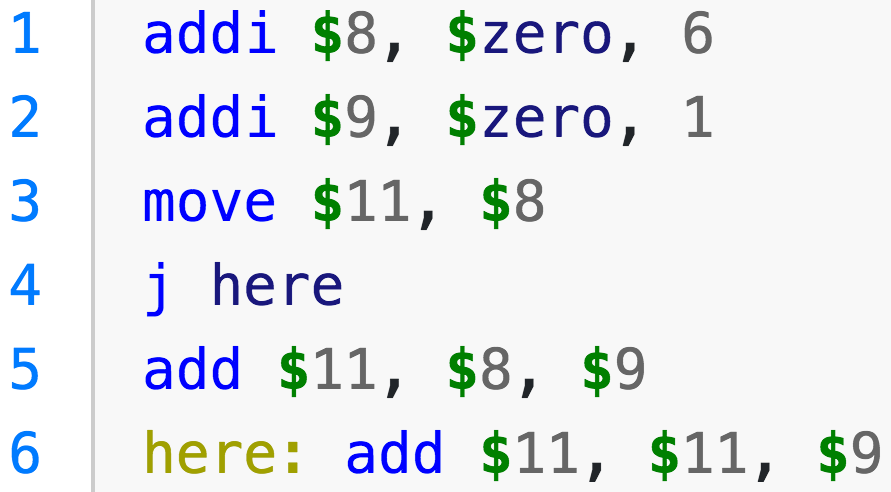

1. Czy $sp w MIPS to:
(a) stop pointer - wskaźnik zatrzymania programu
(b) super position - tryb pracy procesora, pozwalający na zwiększenie jego szybkości
(c) stack pointer - rejestr ze wskaźnikiem początku stosu
(d) stop position - warunek stopu aplikacji
2. Ile argumentów ma komenda sub?
(a) cztery (trzy rejestry wejściowe do odejmowania, jeden rejestr docelowy do wyniku)
(b) co najmniej dwa (co najmniej jeden wejściowy, jeden rejestr docelowy do wyniku)
(c) trzy (dwa rejestry wejściowe do odejmowania, jeden rejestr docelowy do wyniku)
(d) pięć (cztery rejestry wejściowe do odejmowania, jeden rejestr docelowy do wyniku)
3. Do jakiej klasy wedle taksonomii Flynna można zaliczyć GPU?
(a) MISD
(b) SISD
(d) MIMD
4. Architektura RISC w porównaniu z architekturą CISC (np. MIPS vs Intel x86-64):
(a) jest częściej wykorzystywana w urządzeniach mobilnych (telefony, tablety itp.)
(b) jest starą i już niewykorzystywaną architekturą
(c) ma więcej bardziej złożonych instrukcji zmiennej długości
(d) jest mniej bezpieczna przez to jak stworzono ISA
5. Instrukcja w architekturze MIPS:
(a) może mieć zmienną długość
(b) ma zawsze 32 bity długości
(c) zawsze ma odpowiednik o tej samej nazwie w architekturze CISC
(d) jest zabezpieczona przed nieuprawnionym wykonaniem przez GU
6. Do czego służy instrukcja lw?
(a) ładuje słowo z pamięci do rejestru
(b) przenosi słowo pomiędzy komórkami pamięci
(c) przenosi słowo pomiędzy rejestrami
(d) zapisuje słowo z rejestru do pamięci
7. Czym jest pipelining / potokowanie?
(a) przesyłanie danych pomiędzy rejestrami w celu optymalizacji wydajności
(b) specjalne wejście procesora dla potoku danych
(c) zabezpieczenie przed nadpisaniem wrażliwych obszarów pamięci systemu operacyjnego
(d) wykonywanie kilku instrukcji jednocześnie przez procesor
8. Instrukcja w architekturze MIPS:
(a) nie zawsze jest zaimplementowana sprzętowo
(b) nigdy nie pokrywa się z ISA CISC
(c) jest zmiennej długości od 16 do 64 bitów
(d) MIPS nie ma instrukcji
9. Długość słowa w architekturze MIPS to:
(b) 64 bity
(c) 16 bitów
(d) 8 bitów
10. Jaka jest pozytywna cecha architektury Harvard?
(a) możliwość autodiagnozy uszkodzeń i włączania obwodów zapasowych
(b) dane duplikowane są w wielu obszarach pamięci, przez co można szybciej je znaleźć
(c) istnieje wiele szyn danych od procesora do pamięci
11. W jednej lini asemblera MIPS można:
(a) napisać więcej niż jedną instrukcję
(b) podać wprost kod maszynowy instrukcji (ciąg zer i jedynek)
(c) zadeklarować dane, a później umieścić komentarz
(d) napisać najpierw komentarz, później instrukcję
12. Czym są rejestry ogólnego preznaczenia (GPR - general purpose registers)?
(a) rejestrem dostępnych wejść i wyjść ogólnego przeznaczenia (I/O)
(b) rejestrem operacji dostępnych w danej architekturze
(c) wykazem dostępnych źródeł pamięci RAM
13. Czy możliwe jest zaimplementowanie pętli w asemblerze MIPS?
(a) tak, kombinacją kilku instrukcji
(b) tak, instrukcją for
(c) nie ma takiej możliwości, konieczny jest język wysokiego poziomu
(d) tak, instrukcją while
14. Jaka klauzula w asemblerze MIPS rozpoczyna deklarację danych?
(b) .var
(c) .declare
(d) .text
15. Jaka klauzula w asemblerze MIPS rozpoczyna kod programu (instrukcji)?
(a) .data
(b) .var
(c) .declare
16. Czy dana instrukcja MIPS ma poprawną składnię: lw 4($t1)?
(a) nie, ponieważ w MIPS nie ma instrukcji lw
(b) tak
(c) nie, ponieważ 4 powinno być podzielne bez reszty przez 8 (długość słowa w MIPS wyrażana jest w bajtach)
(d) nie, ponieważ instrukcji lw jest potrzebny jeszcze jeden argument
17. Czy dana instrukcja MIPS ma poprawną składnię: lw $t0, 4($t1)?
(a) nie, ponieważ w MIPS nie ma instrukcji lw
(c) nie, ponieważ 4 powinno być podzielne bez reszty przez 8 (długość słowa w MIPS wyrażana jest w bajtach)
(d) nie, ponieważ instrukcji lw jest potrzebny jeszcze jeden argument
18. Które dane zostaną utracone po ponownym uruchomieniu komputera?
(a) na dysku twardym
(b) na dysku SSD
(c) w napędzie taśmowym
19. Czym jest rejestr $pc w MIPS?
(a) jest to rejestr wskazujący gdzie w pamięci procesor będzie szukał następnej instrukcji
(b) jest to rejestr wskazujący na wersję (commit) programu uruchamianego na CPU
(c) jest to pośredni rejestr wykorzystywany przy przekazywaniu wartości do rejestru
(d) jest to rejestr pozostawiony ze względów kompatybilnościowych, obecnie nieużywany
20. Co znajduje się na szczycie hierarchii pamięci?
(a) cache procesora
(b) napęd taśmowy
(d) pamięć RAM
21. Jaka wartość znajdzie się w rejestrze $0 po wykonaniu add $0, $1, $2
(b) nie wiadomo, bo nie znamy wartości w rejestrach $1 i $2
(c) instrukcja ma nieprawidłową składnię, powinna mieć cztery argumenty
(d) wartość w rejestrze $0 nie zmieni się, zmieni się wartość w $2 (będzie sumą $0 i $1)
22. Która z poniższych architektur zakłada wspólną pamięć dla instrukcji i danych?
(a) architektura Łukasiewicza
(b) architektura Stanford
(c) architektura Princeton (von Neumann)
(d) architektura Harvard
23. Czego NIE definiuje ISA (Instruction Set Architecture)?
(a) zbioru dostępnych rejestrów
(b) organizacji pamięci
(c) wyboru instrukcji
24. Instrukcje I-type w MIPS:
(a) zajmują się obsługą przerwań I/O (interrupts)
(b) obsługują szybkie indeksowanie (indexing)
(c) nie występują, są tylko w CISC
25. Jaki jest rozmiar branch delay slot w MIPS?
(b) dwie instrukcje
(c) trzy instrukcje lub więcej
(d) MIPS nie ma branch delay slot
26. Asembler MIPS pozwala na:
(a) ładowanie słów z pamięci do rejestrów
(b) umieszczenie w jednej instrukcji addi więcej niż jednej wartości immediate
(c) zmianę kolejności podawania rejestrów źródłowych i docelowych w instrukcji
(d) ładowanie wielokrotności słów do rejestrów GPR
27. Który z tych układów najszybciej będzie wykonywał jedno konkretne zadanie?
(a) CPU w architekturze RISC
(b) CPU w architekturze CISC
(c) FPGA
28. Długość słowa (word):
(a) jest pojęciem obecnie niewykorzystywanym
(b) jest zawsze stała we wszystkich architekturach
(c) może się różnić w zależności od architektury (ISA)
(d) definiuje się ją na początku programu w asemblerze
29. Co cechuje rejestry ogólnego przeznaczenia (GPR)?
(a) nie można się do nich dostać z poziomu języka asembler
(b) znajdują się w różnych miejsach systemu komputerowego
(c) są małych rozmiarów i jest ich mało
(d) z racji rozmiaru są bardzo wolne
30. Która rodzina instrukcji NIE istnieje w MIPS?
(a) J-type (jump)
(b) R-type (register)
(d) I-type (immediate)
31. Jaka jest rola rejestru $ra w MIPS?
(a) zawiera wskazanie do bloku pamięci liczb rzeczywistych (real adress)
(b) nie ma go w MIPS, jest tylko w architekturach CISC
(c) zawiera informację na temat adresu powrotu po wykonaniu instrukcji jal (return adress)
(d) zawiera liczbę losową do wykorzystania w kodzie (random adress)
32. Czym jest "endianness"?
(a) ustawieniem kolejności bajtów w słowie
(b) wybieranym typem zakończenia programu
(c) rodzajem architektury ISA (typu low-end lub high-end)
(d) ustawieniem kolejności bitów w bajcie
33. W $1 znajduje się liczba 7, a w $2 liczba 42. Po wykonaniu instrukcji add $0, $1, $2 w $0 znajduje się:
(b) 3
(c) 49
(d) $0 się nie zmieni, w $2 znajdzie się 7
34. Która taksonomia nie istnieje?
(a) Flynna
(b) Fenga
(c) Handlera
35. Czemu stosuje się hierarchię pamięci?
(a) nie stosuje się
(b) bo kiedyś się stosowało i tak zostało
(d) dla bezpieczeństwa
36. Co charakteryzuje instrukcje R-type?
(a) działają na pamięci
(b) działają na wartościach bezpośrednich
(c) działaja na rejestrze $pc
37. Co charakteryzuje instrukcje I-type?
(a) działają na pamięci
(b) działają na wartościach bezpośrednich
(c) działaja na rejestrze $pc
(d) działają na rejestrach
38. Co charakteryzuje instrukcje J-type?
(a) działają na pamięci
(b) działają na wartościach bezpośrednich
(d) działają na rejestrach
39. Jeśli wykonamy instrukcję JAL, to gdzie zapisze się adres następnej instrukcji?
(b) w $pc
(c) nie ma takiej instrukcji
(d) zapisuje się tylko przy użyciu instrukcji J
40. Czym jest branch delay slot w MIPS?
(b) wielkością opóźnienia wynikającą z typu wykonywanej instrukcji
(c) koniecznym do obliczenia rozmiarem gałęzi w przypadku rozwidlenia programu (np. wskutek sprawdzania warunku)
(d) skokiem do adresu zawartego w $ra w celu poprawnego wyjścia z funkcji do miejsca gdzie była wywołana
41. Gdzie trzymany jest stos w MIPS?
(b) w rejestrach
(c) w osobnym akumulatorze
(d) w MIPS nie ma stosu
42. Kod napisany w assemblerze:
(a) nie może być osadzany w języku C
(b) wykonywany jest bezpośrednio w procesorze bez dodatkowej translacji do kodu maszynowego
(c) na ogół działa szybciej niż napisany w języku wysokiego poziomu
(d) pozwala na osadzenie w nim kodu języka C
43. Co oznacza zapis "comment:" w MIPS-ie?
(a) zapis jest niepoprawny
(b) komentarz w kodzie
(c) tworzy label o nazwie "comment", wskazujący na miejsce w pamięci po dwukropku
44. W jaki sposób można zmienić ASIC do realizowania zupełnie innej operacji?
(a) używając języka VHDL
(c) zmieniając kod asemblera i ponownie go uruchamiając w ASIC
(d) zmieniając wejścia i wyjścia ASIC
45. Jaki układ zajmuje się kontrolą operacji ALU?
(b) GPU — Graphics Processing Unit
(c) CPU — Central Processing unit
(d) ALU jest niezależne i nie potrzebuje kontroli
46. W jaki sposób można przenieść dane pomiedzy dwoma głównymi obszarami pamięci w architekturze Harvarda?
(a) należy użyć szyny danych łączącej dwa obszary pamięci
(b) architektura robi to samodzielnie w celu zachowania redundancji
(c) wystarczy użyć odpowiednika instrukcji move dla danej architektury
47. W jaki sposób przechowywane są liczby rzeczywiste wedle standardu IEEE 754 na 32 bitach?
(a) 1 bit na znak, 15 bitów na część całkowitą, 16 na część dziesiętną
(b) 1 bit na znak, 5 bitów na lokalizację separatora (kropki), 26 na zakodowanie liczby
(c) 1 bit na znak, 8 bitów na wykładnik, 23 na mantysę
(d) ten standard nie pozwala na kodowanie liczb rzeczywistych, tylko całkowitych
48. Jaka jest rola rejestru $f0 w MIPS?
(a) przechowuje zero, nie da się zmienić jego wartości
(c) jest flagą ustawiona w przypadku dzielenia przez zero (wskazuje na błąd dzielenia)
(d) taki rejestr w MIPS nie istnieje, w MIPS wystepuje tylko rejestr $0
49. Na co pozwala architektura MISD w taksonomii Flynna?
(a) wykrywanie błędow, gdyż te same instrukcje mogą być wykonywane na tych samych danych równolegle
(b) na obliczanie zrównoleglone w klastrze
(c) MISD jako najprostsza architektura wykonuje jedną instrukcję jednoczesnie na tych samych danych
(d) MISD nie istnieje w taksonomii Flynna
50. Czy można uruchomić program napisany w języku wysokiego poziomu (np. C++) stworzony dla architektury CISC na architekturze RISC?
(a) tak, ale tylko dla wybranych typów procesora CISC i RISC
(b) nie
(c) tak, ale wymaga to ponownej kompilacji i odpowiedniej wersji asemblera
(d) tak
51. Czym jest architektura bi-endian?
(a) sposobem ustawienia bajtów w słowie, w tym przypadku od najbardziej znaczących do najmniej znaczących
(b) ta architektura pozwala pracować zarówno w little-endian jak i big-endian
(c) sposobem ustawienia bajtów w słowie, w tym przypadku od najmniej znaczących do najbardziej znaczących
(d) korekcją błędów poprzez duplikowanie bitów na początku i na końcu ciągu danych
52. Co oznacza instrukcja pop dla MIPS?
(a) ściąga jedno slowo ze stosu
(b) MIPS nie wspiera instrukcji pop
(c) odkłada jedno slowo na stos
(d) oznacza pusty cykl procesora
53. Jakiego etapu NIE zawiera potokowanie RISC (pipelining)?
(a) instruction fetch IF
(c) memory access MEM
(d) execute EX
54. Dlaczego w instrukcjach R-Type wystarczy zakodować rejestr na pięciu bitach?
(a) ponieważ używamy adresowania względnego
(b) ponieważ używamy kodowania IEEE 754
(c) ponieważ wystarczą tylko 32 adresy
(d) rejestr w intrukcjach R-type adresujemy na 32 a nie na pięciu bitach
55. Czym jest numeryczny kod maszynowy (numerical machine code)?
(a) kodem typu instrukcji (opcode)
(b) zestawem instrukcji asemblera wspieranych przez dany procesor
(c) skompilowanym kodem asemblera bezpośrednio podawanym do procesora
(d) unikatowym kodem danej architektury procesora (ISA)
56. Czym jest akumulator?
(b) inną nazwą stosu
(c) licznikiem służącym do zliczania liczby iteracji pętli
(d) buforem danych w pamięci RAM o szybkim dostępie (na początku adresacji)
57. Co umożliwia sprawne poruszanie sie po stosie MIPS, szczegolnie przy rekurencji?
(b) stack bottom
(c) stack limit
(d) instrukcje $pop i $push
58. Co cechuje architekturę CISC?
(a) zmienna długość instrukcji
(b) stała długość instrukcji
(c) kazda instrukcja wykonuje się dokładnie jeden cykl zegara
(d) load and store
59. Ile wartości można jednocześnie przekazać do rejestru z użyciem instrukcji addi w MIPS?
(b) dwie
(c) trzy
(d) górne ograniczenie to 32 wartosci
60. Jaka jest rola rejestru $sp?
(a) wskazuje na stack bottom
(b) wskazuje na początek stosu, poniżej niego (na wyższych adresach pamięci) znajdują się dane stosu
(c) jest to adres powrotu ustawiany przez instrukcję jal
(d) wskazuje na stack origin
61. Co oznacza direct mapping dla pamięci cache?
(a) dane z danej komórki pamięci mogą znaleźć się tylko w jednym miejscu w cache
(b) dane z danej komórki pamięci mogą znaleźć się w wielu miejscach w pamięci cache
(c) direct mapping nie dotyczy pamięci cache
(d) oznacza rozmiar 1:1 pamięci cache i RAM
62. Ile komórek pamięci można zaadresować w architekturze 32-bitowej?
(a) 32 - 1 komórek
(c) nie ma ograniczenia, gdyż można używać adresów względnych
(d) 32^(32) - 1 komórek
63. Która architektura była projektowana z myślą aby minimalizować liczbę cykli zegara na instrukcję?
(a) CISC
(c) obie 
Kod do zadań 64-70
(d) żadna z powyższych
64. Jaka będzie wartość rejestru $11 po zakończeniu wykonania kodu?
(a) 7
(c) 6
(d) 11
65. Która z powyższych instrukcji jest pseudoinstrukcją?
(a) w linii 1
(c) w linii 4
(d) w linii 5
66. O ile bajtów zwiększy się $pc po wykonaniu instrukcji 1?
(a) o jeden bajt
(c) o dwa słowa
(d) o 16 bitów
67. Na co będzie wskazywał adres $ra po wykonaniu instrukcji w linii 4?
(a) na adres pamięci wskazywany przez etykietę here
(b) zwiększy się o jedno słowo
(c) zwiększy się o dwa słowa
68. Ile pamięci będzie zajmował powyższy kod w pamięci?
(b) 64 bajty
(c) 256 bajtów
(d) siedem słów
69. Jaka będzie wartość rejestru $9 po zakończeniu wykonania kodu?
(a) 7
(b) 8
(c) 6
70. Ile pamięci będzie zajmował powyższy kod w pamięci?
(a) sześć bajtów
(b) 64 bajty
(c) 256 bajtów
71. W jaki sposób procesor wykonuje instrukcje w pamięci komputera?
(a) sekwencyjnie komórka po komórce, chyba że natrafi na instrukcje typu J-type
(b) naprzemienne, tzn. czyta najpierw pierwsze osiem słów instrukcji, później osiem słów danych i tak dalej
(c) w miejscu, tzn. czyta tylko jedną komórkę pamięci, a zadaniem programisty jest zadbać aby umieścić tam odpowiedni kod
(d) ze wskazaniem, tzn. każda instrukcja zawiera adres kolejnej instrukcji do wykonania
72. Czym jest hit rate w przypadku pamięci cache?
(a) stosunkiem liczby żądań do pamięci znalezionych w cache do liczby wszystkich żądań
(b) szybkością dostępu do pamięci cache
(c) liczbą dostępów do pamięci
(d) optymalnym rozmiarem pamięci cache w stosunku do pamięci RAM
73. Gdzie umiejscowiona jest pamięć cache w hierarchii pamięci?
(a) najwyżej (najszybsza)
(b) pomiędzy rejestrami a pamięcią RAM (wolniejsza od rejestrów, szybsza niż RAM)
(c) pod pamięcią RAM (wolniejsza niż RAM)
(d) nie znajduje się w ogóle w hierarchii pamięci, bo jest osobnym typem dla danych
74. Czym jest przepełnienie stosu?
(a) umieszczeniem poza stosem instrukcji lub danych nadpisując inne jej fragmenty
(b) zaalokowaniem większej pamięci niż potrzebna na dane
(c) przepełnieniem bufora rejestrów
(d) celowym działaniem programisty optymalizującym działanie programu
75. * Osadzanie kodu:
(a) można osadzić kod w C w programie napisanym w asemblerze
(b) można osadzić kod w asemblerze w programie napisanym w C
901. Czy mozna "zlikwidowac" konflikty dostepu do pamieci polegajace na jednoczesnej probie pobrania rozkazu oraz dane?
(a) Ale przeciez takich konfliktow nie ma
(b) Brak poprawnej odpowiedzi
(c) Nie, nie jest to mozliwe
(d) Tak, wystarczy zastosowac dwie niezalezne pamieci typu "cache"
902. Czy czynnosci przewidziane w fazie pobrania rozkazu zaleza od typu rozkazu?
(a) nie, w fazie pobrania rozkazu zawsze wykonywane sa takie same czynnosci, niezaleznie od typu rozkazu
(b) tak, dla rozkazow adresowych niekiedy zachodzi dodatkowo potrzeba pobrania argumentu
(c) tak, dla niektorych rozkazów konieczne jest dwukrotne przeprowadzenie deszyfracji
(d) brak poprawnej odpowiedzi
903. Kiedy ma miejsce tzw. "migotanie stron"?
(a) to pojecie pochodzi z kardiologii
(b) jesli stosowany algorytm wymiany stron usuwa z pamieci ostatnio uzywana strone
(c) brak poprawnej odpowiedzi
(d) tego nie da sie przewidziec
904. Co to jest "wektor przerwań"?
(a) przykladowo: numer przerwania
(b) jest to informacja umozliwiajaca identyfikacje przyczyn przerwania
(c) przykladowo: adres programu obslugi przerwań
(d) kazda z powyzszych odpowiedzi jest (może byc) poprawna, zależy od typu procesora
905. Na czym polega metoda zwiekszania szybkosci sumatora nazywana metoda przeniesienia "jedynkowego i zerowego"
(b) brak poprawnej odpowiedzi
(c) wartosci wszystkich przeniesień sa obliczane jednoczesnie
(d) nie ma takiej metody
906. Dlaczego czesciej stosuje sie organizację pamięci typu 3D, a nie 2D?
(a) czesciej stosuje sie organizację typu 2D poniewaz ma mniejszy uklad adresujacy
(b) poniewaz organizacja 3D ma "mniejszy" uklad adresujacy
(c) nie ma takich organizacji pamieci
(d) brak poprawnej odpowiedzi
907. Przy adresacji posredniej adres fizyczny jest wyliczany w nastepujacy sposob:
(a) pod adresem wskazywanym przez adres zawarty w rozkazie znajduje sie adres fizyczny
(b) brak poprawnej odpowiedzi
(c) adres jest suma adresu zawartego w rozkazie oraz adresu pobranego z tablicy stron
(d) adres jest suma przesuniecia (nie wystepuje zawsze), bazy oraz adresu zawartego w rozkazie
908. Rozwaz nastepujacą instrukcje pętli: realizowane przez 9 pierwszych przebiegow pętli i pętla się kończy (nie ma kolejnego przebiegu). Jaka jest skutecznosc przewidywania skoku, jesli uzywamy dwu-bitowego ukladu przewidywania skoków?
(a) 80%
(b) 95%
(d) brak poprawnej odpowiedzi
909. Po co stosowany jest bufor troj stanowy na styku szyn wewnetrznych i zewnetrznych?
(a) bufor troj stanowy nie jest stosowany
(b) umozliwia przesylanie rozkazow do procesora
(c) umozliwia realizacje przerwania
910. Interfejs standardowy to:
(a) kabel laczący urządzenie zewnetrzne z komputerem
(b) standard lacznosci w systemie
(c) urzadzenie umozliwiające komunikacje uzytkownika z komputerem
(d) polaczenie pomiedzy drukarką a komputerem
911. Rozwaz ponizszy fragment kodu: LD R3, Dana11; ADD R1, R3; SUB R3, Dana2; ST Wynik, R1; Pomiedzy instrukcjami ADD oraz SUB występuje zależność:
(a) wlasciwa
(b) wyjsciowa
(c) anty zaleznosc
912. Zalozmy, ze zrealizowano pamiec wirtualna poprzez podzial pamieci na segmenty. Obliczając adres fizyczny komórki pamięci musimy?
(b) zestawic adres z adresu fizycznego segmentu pobranego z tablicy segmentow oraz z przemieszczenia w segmencie zawartego w adresie wirtualnym w taki sposób, ze adres segmentu stanowi starsze bity adres a przesuniecie w segmencie mlodsze bity.
(c) dodac do siebie adres wirtualny oraz zawartosc wyroznionego rejestru
(d) zadna z odpowiedzi nie jest poprawna
913. Kiedy stosujemy ogolne (globalne) maskowanie przerwań?
(a) kiedy obslugiwane jest przerwanie o wysokim priorytecie
(b) kiedy ma miejsce przelaczanie programow
(c) nie wolno stosowac ogolnego maskowania
(d) brak poprawnej odpowiedzi
914. Czy stosowany jest podzial segmentow na strony?
(a) nie stosuje sie takiej organizacji pamieci
(b) tak, zalezy to od systemu operacyjnego
(c) brak poprawnej odpowiedzi
(d) tak jest zawsze
915. Dlaczego stosowany jest format "upakowany" dla liczb dziesietnych?
(a) jest to jedyny format dla reprezentacji liczb dziesietnych i jest po prostu wygodny
(b) format upakowany jest stosowany ze wzgledu na oszczednosc pamięci
(c) format upakowany umozliwia realizacje operacji arytmetycznych na liczbach dziesietnych bez koniecznosci stosowania rozkazow korygujacych otrzymany wyniki (poprawek)
(d) brak poprawnej odpowiedzi
916. Zalozmy, ze zrealizowano pamiec wirtualna poprzez podzial pamieci na strony. Obliczając adres fizyczny dowolnej komórki pamięci musimy?
(a) Dodac do siebie adres fizyczny strony pobrany z tablicy stron oraz przemieszczenie na stronie zawarte w adresie wirtualnym
(c) Dodac do siebie adres wirtualny oraz zawartosc wyroznionego rejestru
(d) sadna z odpowiedzi nie jest poprawna
917. Jaki sposob adresacji moze wymagac wielokrotnego dostepu do pamieci?
(a) Adresacja wzgledna
(c) Adresacja bezposrednia
(d) Inna
918. Na czym polega przetwarzanie typu „pipe line" (potokowe)?
(a) Jedna z mozliwych realizacji polega na nalozeniu na siebie faz wykonania kolejnych rozkazow
(b) W czasie wykonania jednego rozkazu pobierany jest kolejny rozkaz
(c) Jednoczesnie z pamieci pobieranych jest kilka rozkazow do wykonania
(d) Niezaleznie przebiega adresacja rozkazu oraz jego wykonanie
919. Zalozmy wielopoziomowy system przerwań, kiedy mozliwe jest przejecie oraz obsluga przerwania podczas obsługi innego?
(a) jesli nowo zglaszane przerwanie ma wyzszy priorytet
(c) zawsze
(d) brak poprawnej odpowiedzi
920. Czy mozliwa jest sytuacja, ze wszystkie rozkazy w jakims komputerze sa „0-adresowe" (nie mają pola adresowego)?
(a) Tak, jest to mozliwe w przypadku gdy uzywamy stosu
(b) Nie, nie jest to mozliwe, musimy miec co najmniej dwa rozkazy adresowe
(c) Nie, nie jest to mozliwe, musimy miec co najmniej trzy rozkazy adresowe
(d) Nie, nie jest to mozliwe, musimy miec co najmniej jeden rozkaz adresowy
921. Po co stosowany jest bufor troj stanowy na styku szyn wewnetrznych i zewnetrznych?
(a) Bufor troj stanowy nie jest stosowany
(c) Umozliwia przesylanie rozkazow do procesora
(d) umozliwia realizacje przerwania
922. Co to znaczy, ze adres do pamieci jest wyrownany (ang. aligned)?
(a) Adres jest wyrownany jesli rozmiar slowa wynosi 4 bajty
(c) Brak poprawnej odpowiedzi
(d) Adres jest wyrownany jesli w sposób niezalezny mamy dostep do róznych bajtów pamieci
923. Porownujac architektury wykorzystujące staly rozmiar slowa rozkazowego z architekturami o zmiennym rozmiarze słowa rozkazowego mozna stwierdzic, ze (ang. fixed & variable ebcoding):
(a) Dla zmiennego rozmiaru slowa rozkazowego programy sa zazwyczaj dluzsze
(b) Dla stalego rozmiaru slowa rozkazowego programy sa zazwyczaj dłuzsze
(c) Dlugosc programu dla obu opcji jest taki sam
(d) Brak poprawnej odpowiedzi
924. Rozwaz ponizszy fragment kodu: LD R1, Dana24; ADD R1, Dana2; SUB R1, Dana42; ST Wynik, R1. Pomiedzy instrukcjami ADD oraz SUB występuje zależność:
(a) wlasciwa
(c) anty zaleznosc
(d) brak poprawnej odpowiedzis
925. Przy adresacji wzglednej adres fizyczny jest wyliczany w nastepujacy sposob
(a) Pod adresem wskazywanym przez adres zawarty w rozkazie znajduje sie adres fizyczny
(b) Brak poprawnej odpowiedzi //ew by big_mac
(c) Adres jest suma adresu zawartego w rozkazie oraz adresu pobranego z tablicy stron
(d) Adres jest suma przesuniecia (nie wystepuje zawsze), bazy oraz adresu zawartego w rozkazie
926. Czy na podstawie zawartosci pamieci mozna odroznic rozkaz od danej?
(a) nie da sie odroznic rozkazu od danej, zarówno rozkaz jak i dana sa zapisane jako ciąg zer i jedynek
(b) Tak, rozkaz od danej musi byc rozrozniany, inaczej komputer nie móglby dzialac
(c) Tak, dla rozkazow sa zarezerwowane pewne kombinacje zer i jedynek
927. Konflikt dostepu do danych w przypadku architektur typu RISC polega na:
(a) kolejna wykonywana instrukcja zada dostepu do rejestru wykorzystywanego przez poprzednią
(b) Brak poprawnej odpowiedzi
(c) Kolejna wykonywana instrukcja zada dostepu do zajetego procesora
928. Kiedy ma miejsce tzw. „migotanie segmentow"
(a) To pojecie z kardiologii
(b) Jesli stosowany algorytm wymiany segmentow usuwa z pamieci ostatnio uzywany segment
(d) Tego nie da sie przewidziec
929. Jesli jednoczesnie procesor oraz urzadzenie zewnetrzne ząda dostepu do pamięci, dostęp dostaje:
(a) procesor
(b) urzadzenie zewnetrzne
(d) brak poprawnej odpowiedzi
930. Czy stosowany jest podzial stron na segmenty?
(a) nie stosuje sie takiej organizacji pamieci
(b) tak, zalezy to od systemu operacyjnego
(c) brak poprawnej odpowiedzi
(d) tak, przeciez to tryb adresowania wirtualnego.
931. Ktora z metod rozbudowy pamieci jest praktyczniejsza?
(a) oczywiscie zwiekszenie liczby slow, poniewaz upraszcza sie adresowanie
(b) zadna ze znanych metod nie ma "przewagi"
(c) wydluzanie dlugosci słowa, poniewaz nie powoduje komplikacji układu adresujacego
(d) brak poprawnej odpowiedzi